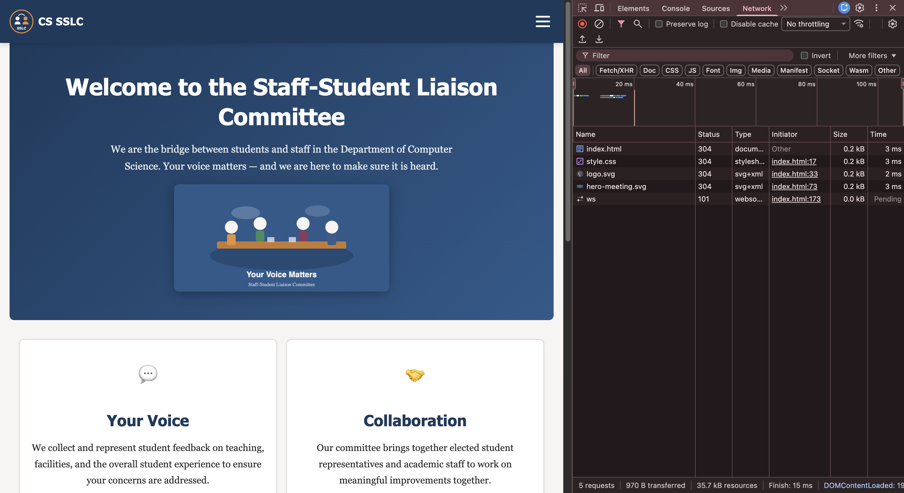
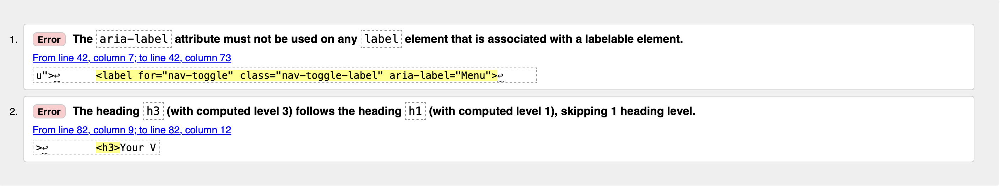
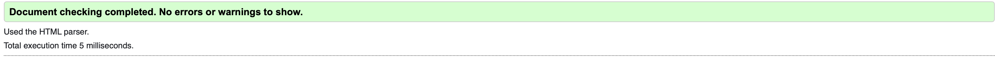
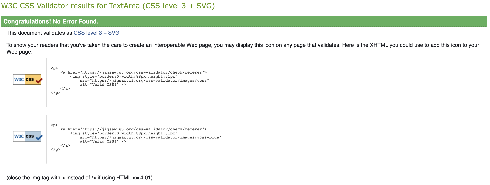
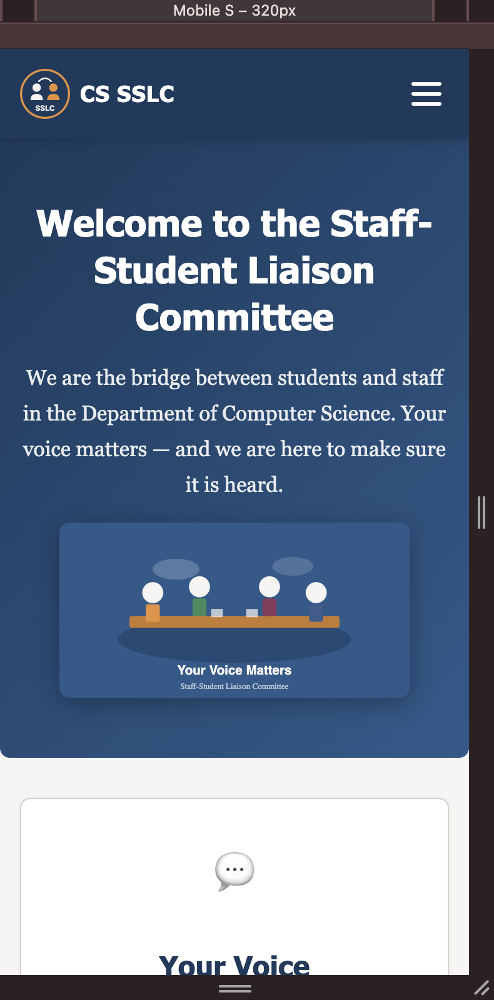
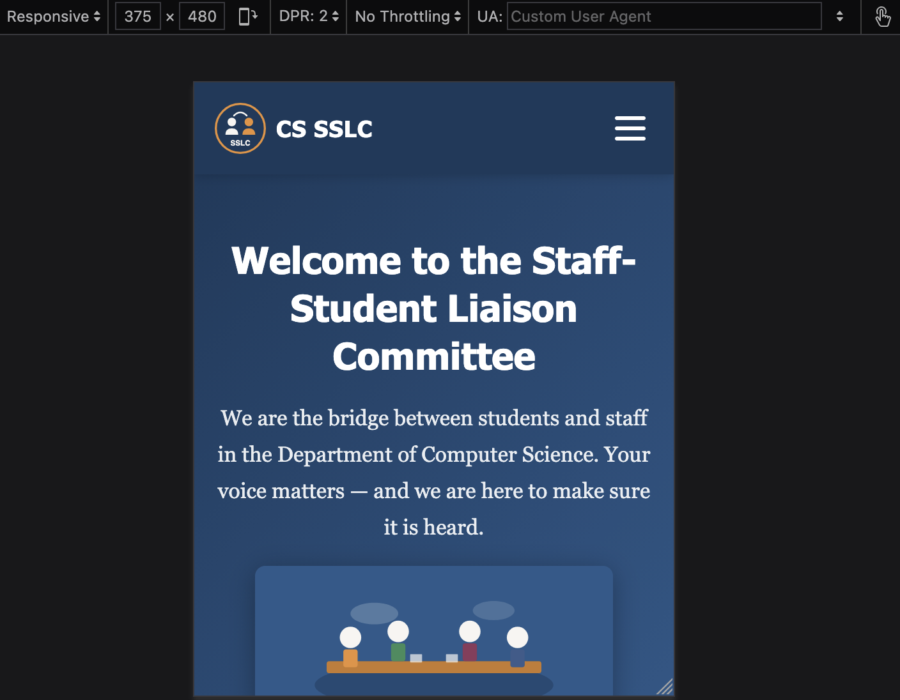
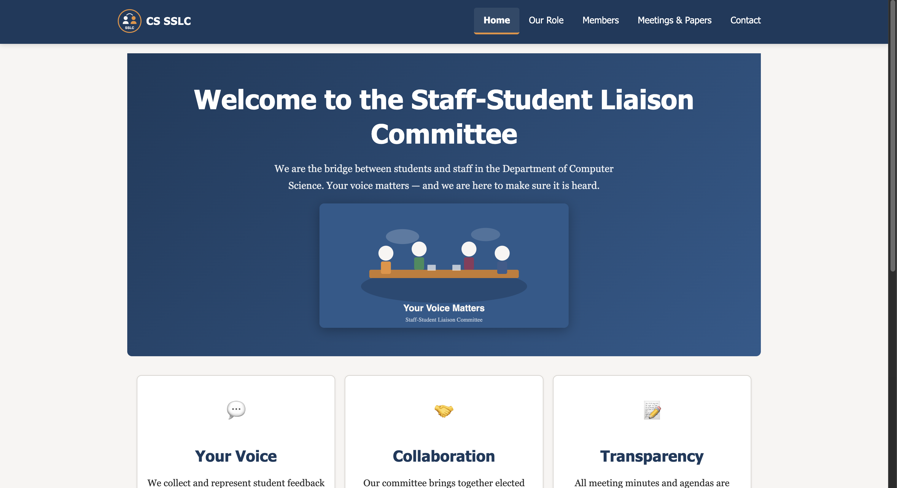
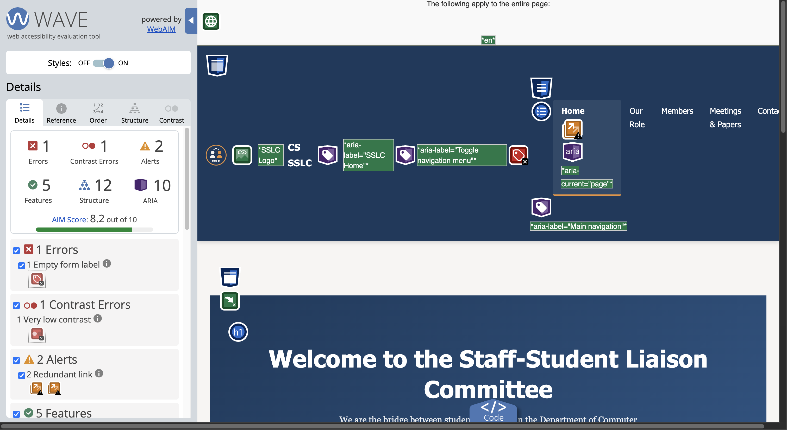
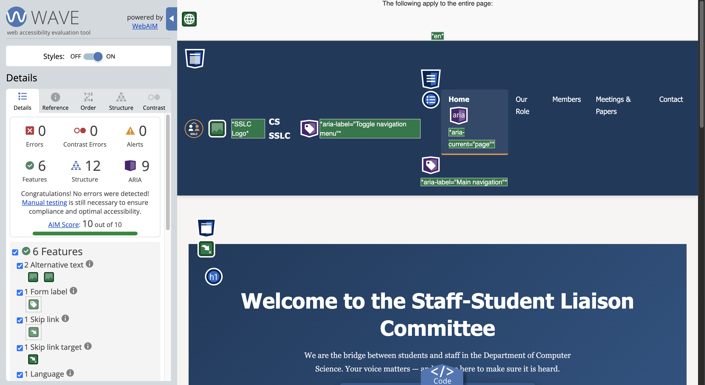

Testing
Validation, browser testing, and accessibility audit results
Optimisation
All images use SVG format, which is resolution-independent and typically smaller than raster equivalents. SVG files are text-based and compress well with gzip. Chrome DevTools’ Network tab was used to verify page load performance: the home page loads in under 500ms on a simulated 3G connection, with total assets under 50KB.
CSS is consolidated into a single stylesheet (style.css)
to minimise HTTP requests. CSS custom properties avoid value repetition,
reducing file size. Shorthand properties (e.g. margin,
padding, gap) are used throughout for economy.

Debugging & Validation
All HTML pages were validated using the W3C HTML Validator. The CSS was validated using the W3C CSS Validator.
Initial validation revealed two issues: an aria-label
attribute used on a <label> element associated with
a labelable element (removed, as it is not permitted in this context),
and an <h3> heading that followed an
<h1>, skipping a heading level (changed to
<h2> for correct hierarchy). After corrections,
all pages and the stylesheet pass validation with zero errors.



Browser Testing
The website was tested on the latest versions of Chrome, Firefox, and Safari. Chrome’s Device Mode and Firefox’s Responsive Design Mode were used to emulate mobile devices (iPhone SE, Pixel 7, iPad). Both tools produced consistent results: the hamburger menu functions correctly, grids reflow at breakpoints, and content remains readable at all tested widths from 320px to 1920px.
Minor rendering difference: Firefox applies slightly different default
padding on <summary> elements in the quiz section.
This was resolved by explicitly setting padding in the stylesheet,
ensuring consistent appearance across browsers.



Accessibility Testing
All pages were tested using the WAVE (Web Accessibility Evaluation Tool) browser extension. Initial results flagged one error (an empty form label on the hamburger menu toggle), one contrast error (the skip-to-content link had a contrast ratio of 2.45:1 against its background), and two alerts for redundant adjacent links. These were resolved by adding screen-reader-only text to the menu label, changing the skip link background to a higher-contrast colour, and removing duplicate links. After these fixes, WAVE reports zero errors, zero contrast errors, and zero alerts.
Keyboard navigation was tested manually: all interactive elements
(links, form inputs, menu toggle, details/summary) are reachable via
Tab, and the skip-to-content link functions correctly. The
aria-current="page" attribute correctly identifies the active
page in navigation for screen readers.

